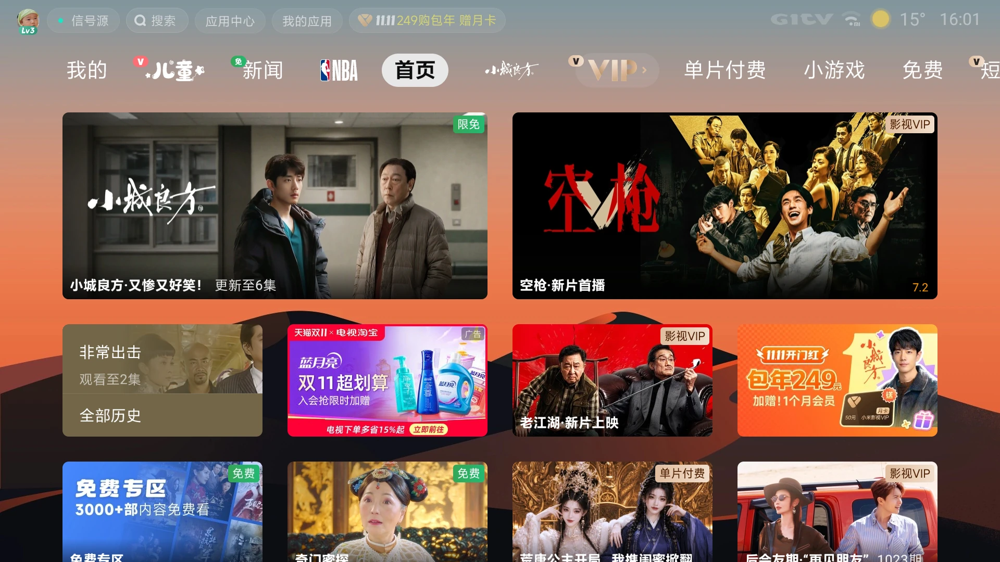
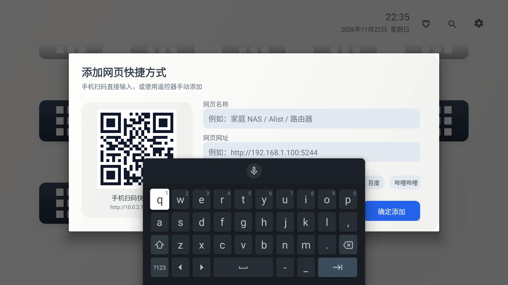

精选自然风光壁纸
7 套摄影级大片与全天候自适应文字，选中时名称自然浮现。

Room for what matters
一个简洁、无广告的 Android 电视桌面。


同机实拍 原生桌面内容随系统与账号变化
7 套摄影级大片与全天候自适应文字，选中时名称自然浮现。
长按应用，即可调整顺序。

手机电脑扫码即传，免拷 U 盘流式直装。

扫码一键添站，常用看板与主页大屏直达。

0.9.8 起支持在线更新：设置 → 检查更新。
0.9.17 预览版 · Android 6.0+ · 约 3.2 MB
已安装 0.9.8 或更新版本，可直接在电视上检查更新。
更新需手动检查，并由你确认安装；没有新版时会提示已是最新版本。
0.9.9 起，离开更新窗口后可继续下载；取消安装或完成授权后，可返回“检查更新”继续安装。新版首次启动时会确认升级结果。
旧版没有此入口，需先按上方说明手动安装一次当前版本，后续新版即可在线更新，无需再拷 U 盘。
若提示需要安装权限，请按电视提示允许 Still 安装应用后重试；不同电视的授权方式可能不同。覆盖更新时请勿先卸载，以保留排序和设置。
0.9.14 起支持在同一局域网内通过手机或电脑免拷 U 盘极速向电视推送安装包。
0.9.11 起支持将常用网页（个人主页、内网控制台、看板等）添加到电视桌面。
可在 Still 设置中查看默认桌面状态、尝试开机启动。是否生效取决于电视固件，Home 键、重新开机和待机唤醒需分别确认。
支持 Android 6.0 及以上。已在小米电视 5 Pro / Android 9 上实机使用，其他型号需确认兼容性。